Ana Yemekler
Lahmacun
Lahmacun, kıymalı, domatesli harçla hazırlanan, taş fırında pişmiş incecik bir hamur yemeğidir.
Patlıcan Kebabı
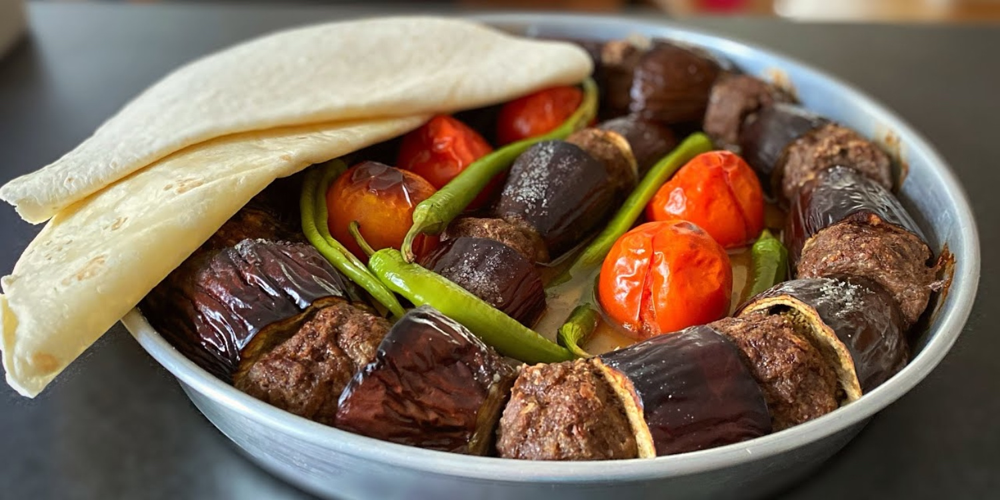Patlıcan kebabı, patlıcanların arasına kıyma et konularak tepsiye ya da şişeye dizilip pişirilen, salçalı sosuyla lezzetlenen nefis bir Antep klasiğidir.
Soğan Kebabı
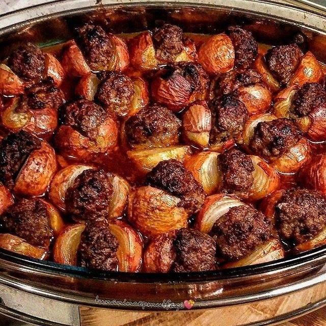Soğan kebabı, arpacık soğanların kıyma etle birlikte pişirilmesiyle hazırlanan, hafif ekşimsi tadıyla öne çıkan geleneksel bir Antep kebabıdır.
Kelle Paça
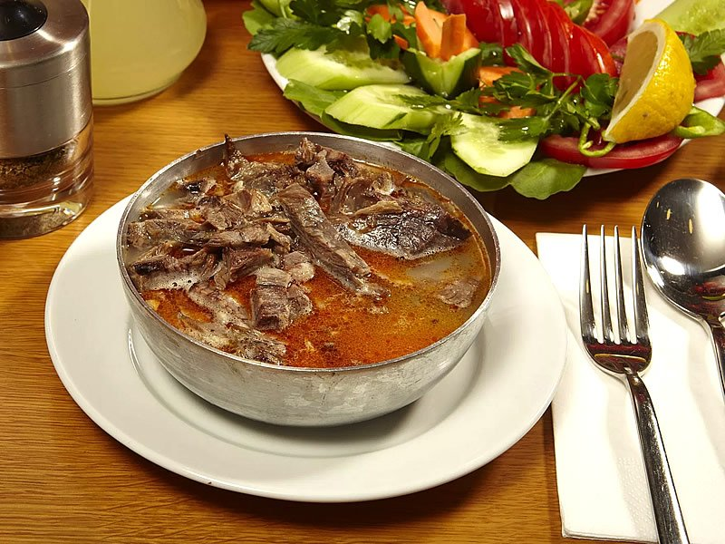Kelle paça, kuzu kelle ve paçasının uzun süre haşlanmasıyla hazırlanan, sarımsaklı ve sirkeli sosla zenginleştirilen, şifa deposu meşhur bir Antep yemeğidir.
Ali Nazik

Yanına pilavla servis edilen klasik ve vazgeçilmez bir lezzet.
İçli Köfte
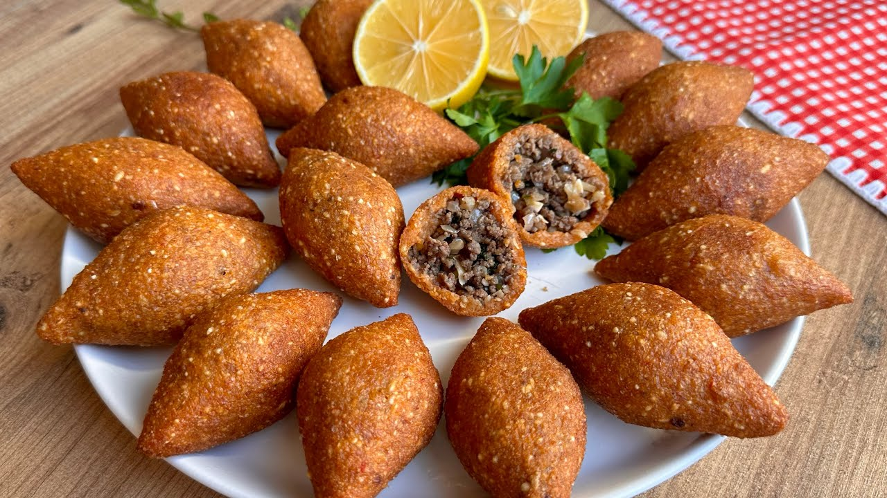Yanına pilavla servis edilen klasik ve vazgeçilmez bir lezzet.
Yuvarlama

Yanına pilavla servis edilen klasik ve vazgeçilmez bir lezzet.
Nohut Dürümü
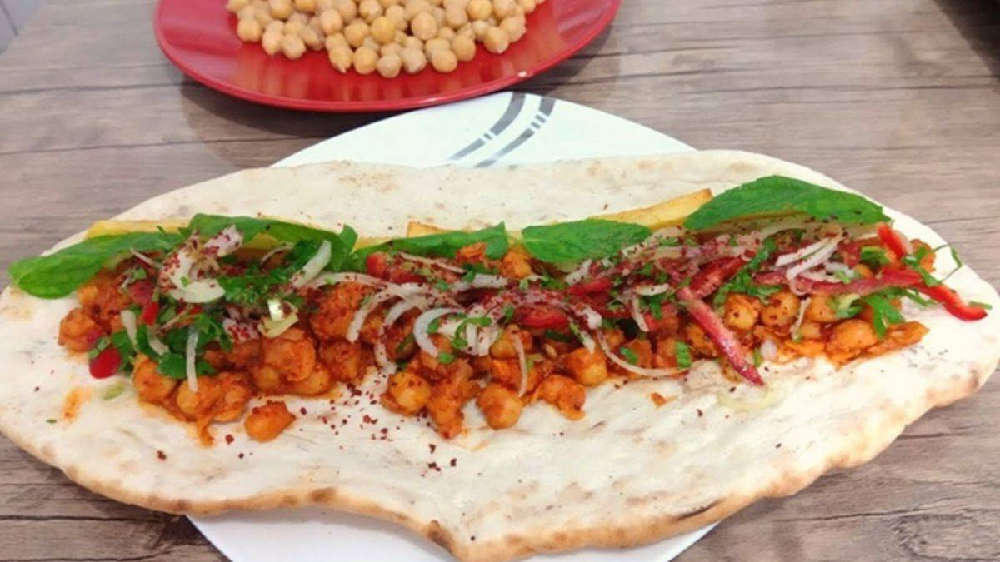Yanına pilavla servis edilen klasik ve vazgeçilmez bir lezzet.
Antep Kömbe

Yanına pilavla servis edilen klasik ve vazgeçilmez bir lezzet.
Beyran
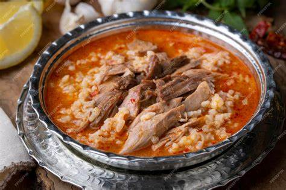Yanına pilavla servis edilen klasik ve vazgeçilmez bir lezzet.
Çorbalar
Ezogelin Çorbası
Bulgur, mercimek ve baharatların uyumuyla yapılan yöresel bir çorba.
Mercimek Çorbası
Bulgur, mercimek ve baharatların uyumuyla yapılan yöresel bir çorba.
Alaca Çorba
Bulgur, mercimek ve baharatların uyumuyla yapılan yöresel bir çorba.
Şiveydiz

Bulgur, mercimek ve baharatların uyumuyla yapılan yöresel bir çorba.
Lebeniye

Bulgur, mercimek ve baharatların uyumuyla yapılan yöresel bir çorba.
Tatlılar
Kare Baklava

İncecik yufka katları arasında bol fıstıkla hazırlanan şerbetli tatlı.
Midye Baklava

İncecik yufka katları arasında bol fıstıkla hazırlanan şerbetli tatlı.
Şöbiyet Baklava
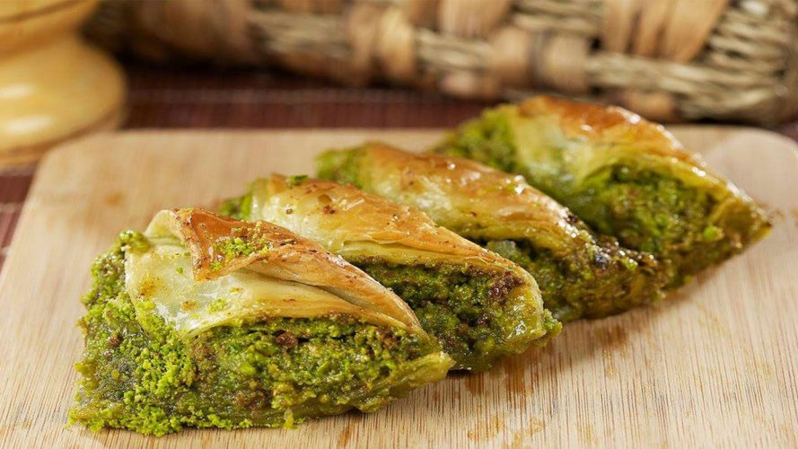İncecik yufka katları arasında bol fıstıkla hazırlanan şerbetli tatlı.
Fıstık Sarma
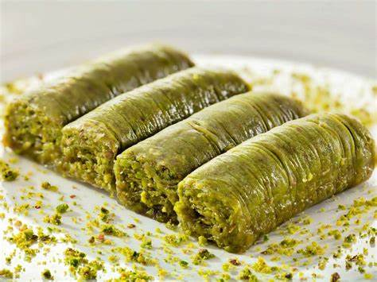İncecik yufka katları arasında bol fıstıkla hazırlanan şerbetli tatlı.
Soğuk Baklava

İncecik yufka katları arasında bol fıstıkla hazırlanan şerbetli tatlı.
Kadayıf

İncecik yufka katları arasında bol fıstıkla hazırlanan şerbetli tatlı.
Kaymaklı Kadayıf
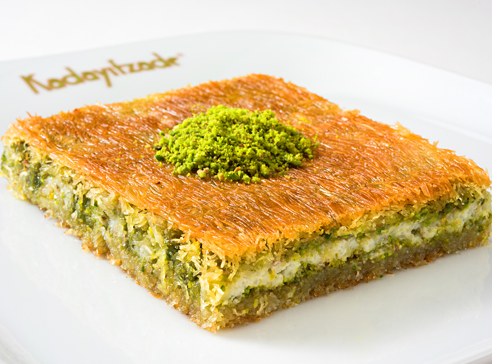İncecik yufka katları arasında bol fıstıkla hazırlanan şerbetli tatlı.
Bohça Kadayıf
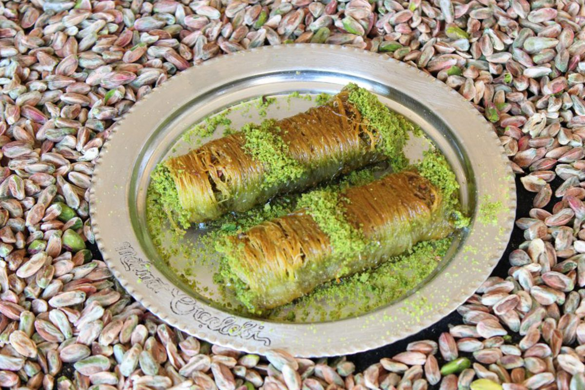İncecik yufka katları arasında bol fıstıkla hazırlanan şerbetli tatlı.
Hasır Kadayıf
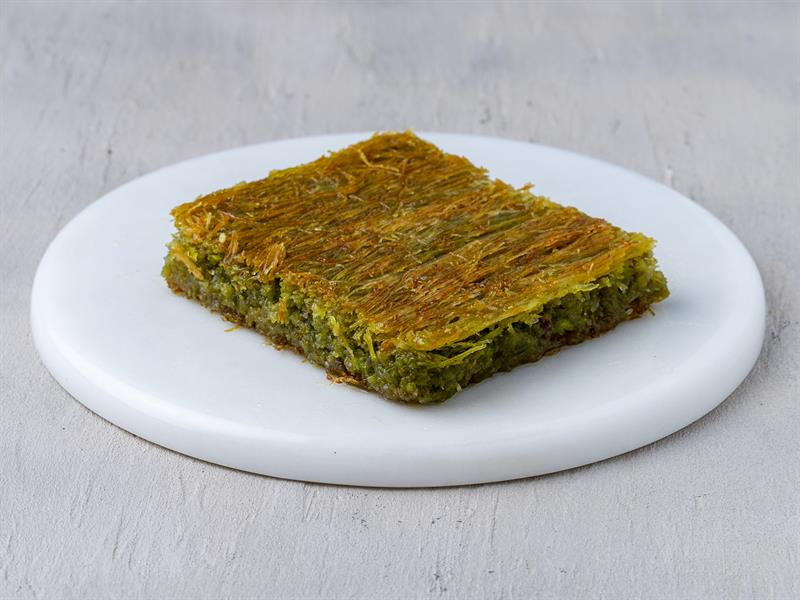İncecik yufka katları arasında bol fıstıkla hazırlanan şerbetli tatlı.
Billuriye

İncecik yufka katları arasında bol fıstıkla hazırlanan şerbetli tatlı.
Antep Kahkesi

Altı hafif yanık, sütlü ve hafif bir tatlı.
Antep Kurabiyesi

Altı hafif yanık, sütlü ve hafif bir tatlı.
Şam Tatlısı
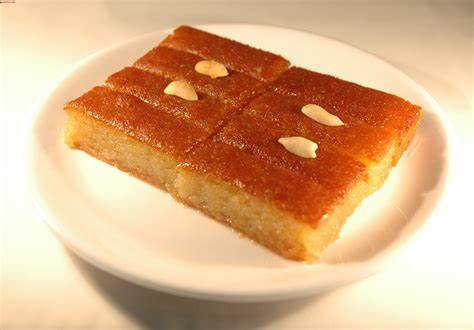Altı hafif yanık, sütlü ve hafif bir tatlı.
Katmer

Altı hafif yanık, sütlü ve hafif bir tatlı.